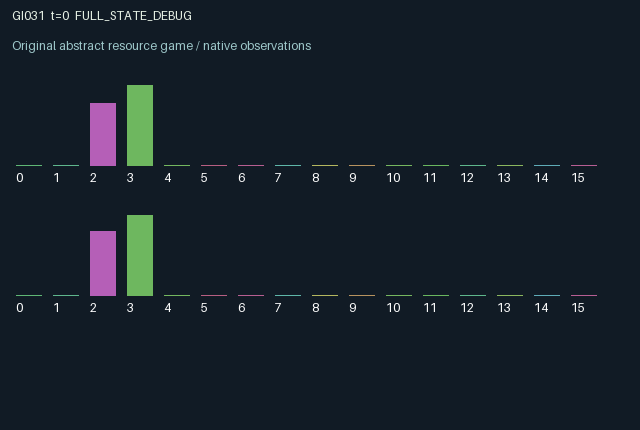

GI031 / LEGACY_ARRAY
astra-d2-00031: Asynchronous consensus with expiring commitments and stale evidence
2 agents5 actions16 observation columns32 original horizonRuntime: PASS
Release verification episode
Untrained uniform legal actions. Actual JAX state sampled along the full original episode; full-state debug camera. No human performance or learning claim.

Run this game
crucibles play --game 31
Start Python locally, then open the address printed by the terminal. Installation, multiplayer, takeover and keyboard controls →
Objective, rewards & ending
Exact task contract
{
"termination": "Original kernel t >= 32; see mechanism and source"
}Declared per-step reward bounds: -1.0 to 1.0. Observability: source_defined.
Rules
Original mechanism document (historical status wording retained)
# astra-d2-00031: Asynchronous consensus with expiring commitments and stale evidence This initial parentless proposal uses familiar decentralized inference, cheap-talk and asynchronous-agreement ingredients. Their combination is a proposed causal mechanism rather than a claim of formal novelty, nonisomorphism or benchmark independence established by testing. The author received no other proposal or evaluation source. ## Transition mechanism and actions There is a hidden binary target, two private noisy clues, persistent public messages and two expiring public commitments. Each role has an episode-fixed private clue reliability sampled between 0.65 and 0.9. Independent clue noise is sampled only through the supplied reset or step key. The implementation draws a potential clue each step but installs it only when the role samples. Actions are 0 obtain a fresh private clue, 1 announce zero, 2 announce one, 3 commit zero and 4 commit one. Announcements are arbitrary chosen messages: the environment does not force them to match the sender's clue. They persist until overwritten. A new commitment replaces one's old one and starts with age zero. An unrenewed commitment is available for the next two transitions and expires when its incremented age reaches three. Once both commitments are present, agreement on the hidden target earns a common successful-resolution outcome, agreement on the wrong bit earns a common error outcome, and disagreement earns a common conflict outcome. Any such paired resolution clears the commitments and starts a new target epoch. A target epoch also ends after eight transitions even without resolution. The new target is resampled and may happen to equal the old bit; an epoch change still invalidates old evidence. Pair resolution is evaluated against the old target before a same-step time-based refresh. Clues and messages remain stored across epoch changes. Their epoch stamps explicitly identify them as stale. Sampling and announcing occur before that transition's target refresh, so a clue or announcement obtained on a refresh transition is immediately stale in the returned observation. This ordering is intentional. New targets are never inserted directly into an observation. ## Information and delayed interaction Private observations include only one's clue, its age/freshness and one's reliability. Both commitment values and ages are public. Messages are public and carry freshness/age information. A role can follow a partner's public commitment, which creates a timing problem for the first committer rather than requiring simultaneous actions. The sixteen columns are: time/32; own clue; own reliability; own clue-current indicator; own clue age/32; partner message encoded as (value+1)/2; partner message-current indicator; partner message age/32; own message with the same encoding; own message-current indicator; own and partner commitments using the same encoding; own and partner commitment ages/3; epoch phase/8; previous common resolution outcome. The encoding maps missing to zero, bit zero to 0.5 and bit one to one. An agent's message and commitment persist and influence the other's decision context. Its commitment can combine with the other's stored commitment to determine both rewards and reset the hidden target, invalidating both roles' evidence. Resampling therefore has an endogenous cause as well as the fixed epoch timeout. ## Incentives and reward bounds The common resolution outcome is 0.75 for correct agreement, -0.55 for wrong agreement, -0.20 for disagreement and zero without paired resolution. Individually, sampling costs 0.035, announcing costs 0.01, committing costs 0.02, and an unrenewed commitment expiring costs 0.06. Role actions are mutually exclusive. A conservative expression bound is [-0.645, 0.75]; the code also clips to [-1, 1]. Resolving a pair necessarily involves at least one current commit action, so the expression's loose upper bound need not be reached by both roles simultaneously. The incentives trade additional private evidence and communication against stale information, commitment expiry and the finite horizon. With no wait action, every action has a small cost; this is explicit. A clue's known reliability can justify uncertainty, but no policy performance or learned inference ability is asserted. ## Interface and evidence status The source intends the exact A2/O16/U5 interface, all-legal masks, 32 transitions and preservation of terminal state/observation. Every state entry is an initialized JAX array. The supplied step key supplies independent potential clue noise and target refresh randomness, with no external randomness. The author did not execute candidate Python, initialize JAX, invoke a compiler, run isolated validation, inspect learning results, determine duplicate eligibility or qualify this mechanism. A syntax parse is not such evidence. Backend revision and model-token counts are unknown and remain null in provenance. All source and generation-context labels are train; final_test_used is false.
Commands
0Action 0; see mechanism and source
1Action 1; see mechanism and source
2Action 2; see mechanism and source
3Action 3; see mechanism and source
4Action 4; see mechanism and source
Roles & abilities
agent_0 Original legacy agent; see mechanism and source
agent_1 Original legacy agent; see mechanism and source
Observation permissions
Training receives only the original observation rows. Role cameras use declared visibility; debug cameras are explicitly marked. Local benchmark records log debug exposure and role takeover history.
Exact observation layout
[]
Entity visibility & attributes
[]
Actual verification & provenance
Per-game execution receipt
{
"game": "gi031",
"status": "PASS",
"verification_revision": 2,
"source_sha256": "8f9463e2db8538fc97041d32050cd939c720f70d30a0fa2f562397940728a217",
"seed": 20261101,
"runtime": {
"jax": "0.4.38",
"numpy": "1.26.4",
"devices": [
"TFRT_CPU_0"
]
},
"dimensions": {
"num_agents": 2,
"observation_size": 16,
"num_actions": 5,
"max_steps": 32
},
"checks": {
"eager_reset": {
"status": "PASS",
"seconds": 1.0185434818267822
},
"observation_spaces_legal_masks": {
"status": "PASS",
"seconds": 0.23003172874450684
},
"eager_step": {
"status": "PASS",
"seconds": 0.834998607635498
},
"jit_reset": {
"status": "PASS",
"seconds": 0.48239684104919434
},
"jit_step": {
"status": "PASS",
"seconds": 0.5788648128509521
},
"eager_jit_integer_parity_float_measurement": {
"status": "PASS",
"seconds": 0.001249074935913086
},
"jit_vmap_reset": {
"status": "PASS",
"seconds": 0.6761817932128906
},
"jit_vmap_step": {
"status": "PASS",
"seconds": 0.8514988422393799
},
"outer_autoreset_api": {
"status": "PASS",
"seconds": 1.0469255447387695
},
"full_original_horizon_episode_and_render": {
"status": "PASS",
"seconds": 1.6581265926361084
}
},
"human_scores": null,
"browser_controls": "PENDING",
"failures": [],
"elapsed_seconds": 8.151655197143555,
"float_parity_max_abs": 0.0,
"numerical_parity": "EXACT",
"raw_terminal_absorbing": "NOT_PART_OF_ORIGINAL_LEGACY_CONTRACT",
"terminal_outer_reset": "PASS",
"episode_steps": 32,
"scripted_random_returns": [
0.045000046491622925,
0.130000039935112
],
"terminal": true,
"demo_information": "FULL_STATE_DEBUG",
"demo_frames": 33,
"render_roles_checked": 2
}Chromium control verification
{
"game": "gi031",
"status": "PASS",
"human_scores": null,
"engineering": true,
"checks": [
"catalog_selected_and_real_native_reset",
"dom_queue_and_native_step",
"second_participant_ownership_and_native_joint_step",
"all_roles_individually_controllable_no_role_cap",
"explicit_debug_camera",
"release_to_pure_ai_without_reset"
],
"ui_sha256": "15b5861d23b3c42811865c954d5a988280bbfd21cf8e93754be2437a027158c5",
"seconds": 3.672567129135132
}Original identity and file hashes
{
"id": 31,
"key": "gi031",
"title": "astra-d2-00031: Asynchronous consensus with expiring commitments and stale evidence",
"summary": "",
"tags": [],
"family": "legacy_array",
"dimensions": {
"num_agents": 2,
"observation_size": 16,
"num_actions": 5,
"max_steps": 32
},
"source_sha256": "8f9463e2db8538fc97041d32050cd939c720f70d30a0fa2f562397940728a217",
"manifest_sha256": "3997c0f9b1d656f1fdea0231a6e595a4dc1ac44f9ab3623c627ddc4138172862",
"files": [
{
"file": "candidate.py",
"sha256": "8f9463e2db8538fc97041d32050cd939c720f70d30a0fa2f562397940728a217",
"bytes": 6107,
"origin": "work/exp_2/astra_generation/discovery_v2/initial/candidate_00031/attempt_00/candidate.py"
},
{
"file": "mechanism.md",
"sha256": "e0207b104d81155f6b7d9e9615529d965ecdbb8c1c0437dbf5c835d2007d6e8b",
"bytes": 5064,
"origin": "work/exp_2/astra_generation/discovery_v2/initial/candidate_00031/attempt_00/mechanism.md"
}
],
"original_status": "LEGACY_SOURCE",
"original_saved_replay": false,
"release_validation": "PASS",
"human_scores": null,
"browser_validation": "PASS"
}